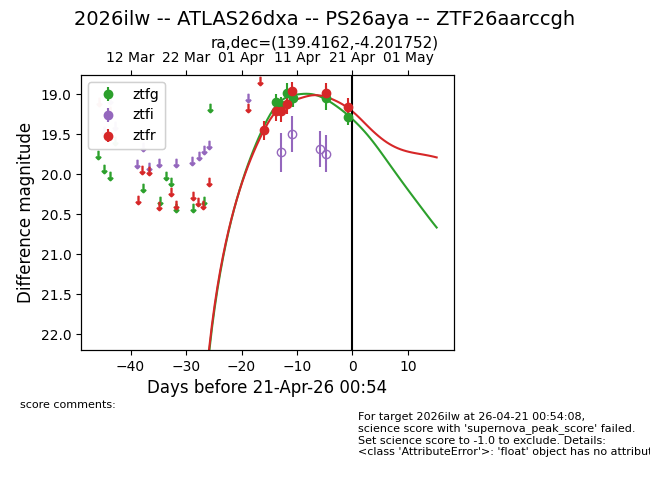
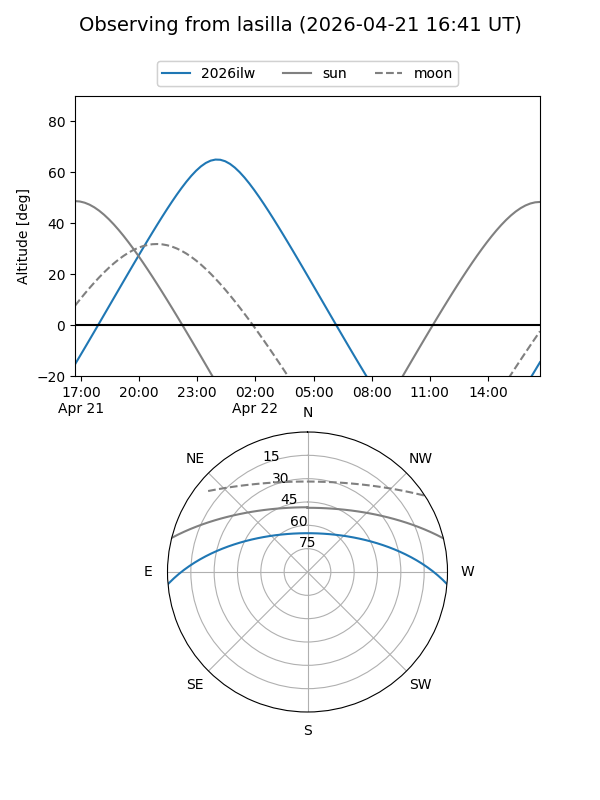
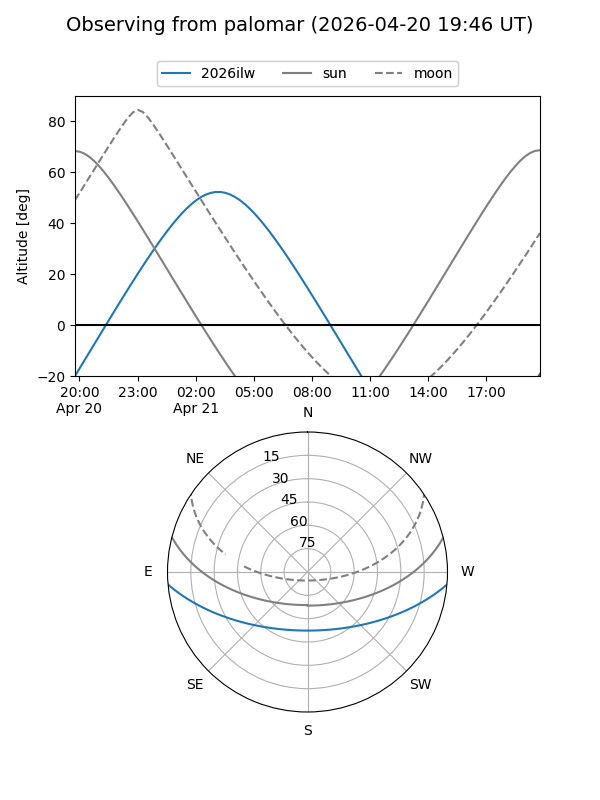
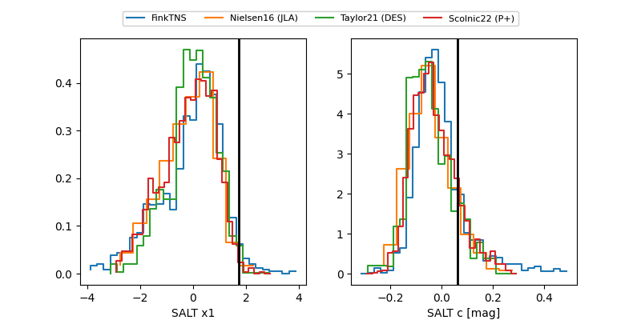

2026ilw
Target 2026ilw at 2026-04-21 00:59
Aliases and brokers:
FINK: link
Lasair: link
ALeRCE: link
TNS: link
YSE: link
alt names
ZTF26aarccgh (ztf,fink_ztf)
2026ilw (tns,yse)
ATLAS26dxa (atlas)
PS26aya (panstarrs)
Coordinates:
equatorial (ra, dec) = 139.4162,-4.20175
equatorial (HMS+DMS) = 09:17:39.89,-04:12:06.31
galactic (l, b) = (235.6903,+29.68684)
Flags:
Photometry:
last ztfg=19.28, ztfr=19.16
6 ztfg, 7 ztfr detections
Lightcurve

Visibility


Additional plots
